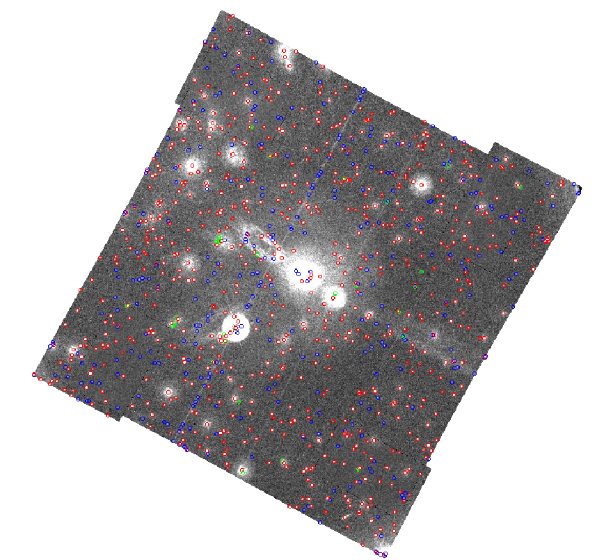

The following diagram was obtained from ommergelists by reducing the OM data for observation 0105260601 using the omichain.
Figure 1 shows the regions produced by ommergelists overlaid on the V-band mosaiced sky-image. The red regions are the sources that are common to both input source-list files. The blue regions are the ones only found in the second observation file (the sources from the mosaiced sky-images) and the green ones those unique to the first observation source-list file (the sources from the exposure images). As can be seen, there are a few spurious blue sources associated with the scattered light feature near the centre.
|  |